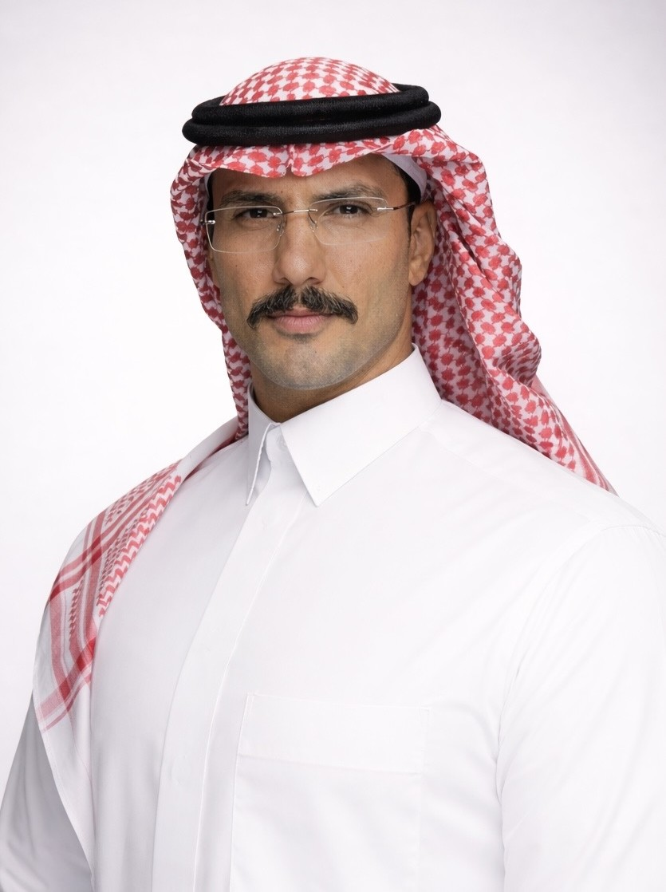

Certified MSc HSEMS Level 8 | NEBOSH IGC | ISO 45001 / 9001 / 14001 / 22000 Lead Auditor | OSH Professional Accredited | Incident & Accident Prevention & Investigation | Safety Management Systems (SMS)
Selected live platforms I personally developed and shaped to demonstrate cross-sector capability in governance, risk, compliance, safety, environmental sustainability, healthcare analytics, engineering risk assessment, and public service digital solutions.
Supporting visitors with guidance, resources, and essential information.
Supporting safety assurance, inspections, compliance oversight, and operational governance.
Supporting medical research analysis, evidence synthesis, and scientific decision-making.
Supporting environmental impact assessment, compliance management, and sustainability initiatives.
Supporting machine safeguarding assessments, hazardous energy evaluation, and workplace risk reduction.
Supporting integrated audits, risk management, compliance monitoring, corrective actions, and organizational assurance activities.
Supporting incident and occurrence investigations, root cause analysis, corrective actions, evidence management, and organizational learning.